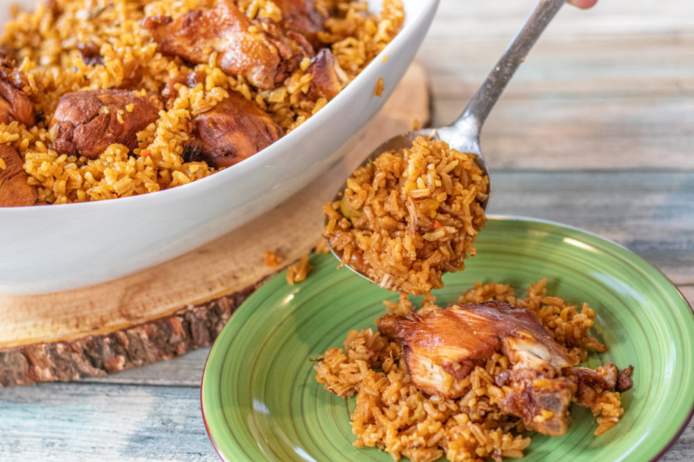

Dominican Locrio

Description
Locrio is one of the most classic of Dominican dishes. It was one of the first
dishes I learned to cook growing up. I used to prepared it at least once a week.
The reason is that is an easy to cook recipe and super flavorful. I garantee
that you will love it.
Ingredients
- 1 whole chicken cut into 10 pieces, skin off except wings and drummettes
- 3 tbsp lemon or lime juice
- 2 tbsp soy sauce
- 3 tbsp Goya adobo
- 1 tsp ground oregano
- 2 tsp minced garlic
- 1/4 cup Mazola corn oil
- 1 tbsp sugar
- 1/4 cup tomato sauce or 1 tbsp tomato paste1/4 cup tomato sauce or 1 tbsp tomato paste
- 1/3 cup Goya olives, chopped
- 4 slices yellow onion
- 1 packet chicken bouillon
- 4 strands fresh cilantro
- 1/4 cup water for adding to marinade
- 3 cups water for second cooking portion
- 2 1/2 cups long grain rice
Steps
-
Prep chicken. Make sure to take skin off of all chicken pieces except
wings and drumette. Also discard the wing tips.
-
Season chicken by adding lemon (or lime) juice, soy sauce, oregano, adobo,
and garlic. Stir well. You can marinade for a few hours or overnight for
more flavor but not necessary.
-
In a deep pot, over medium high heat, add corn oil.
-
Add the sugar and watch for it to begin caramelizing. It will smoke a bit so
that is normal. Watch my video on this post so you can see just how caramelized
you can let it get. It's almost like burnt.
-
Add the chicken piece by piece while holding the lid over the pot. It may get a
bit splatty so just be careful.
-
Lower the heat to medium and cover for about 3 minutes.
-
In the meantime, add 1/4 cup water to the remaining seasoning liquid.
-
Turn pieces over and add a bit of the seasoned liquid to the chicken and cover.
Continue to stir and add liquid if needed every 5 minutes until cooked through.
-
Once cooked through and water is evaporated, remove chicken to a plate, cover.
-
Add tomato sauce, olives, onions, chicken bouillon and cilantro to the pot where
you just removed the chicken from. Give it a good stir.
-
Add 3 cups water, stir, cover, raise heat to high and wait for the water to boil.
-
Once pot is boiling, add rice and stir in well.
-
Allow water to evaporate while stirring the rice often.
-
Once is almost done evaporating lower heat to simmer.
-
Add the cooked chicken and VERY gently stir.
-
Cover for 30 minutes. Prep any sides you'd like.
-
After 30 minutes, stir and cover for another 5 to 10 minutes.
-
And voila! you are done and ready to enjoy an amazing Dominican Locrio!